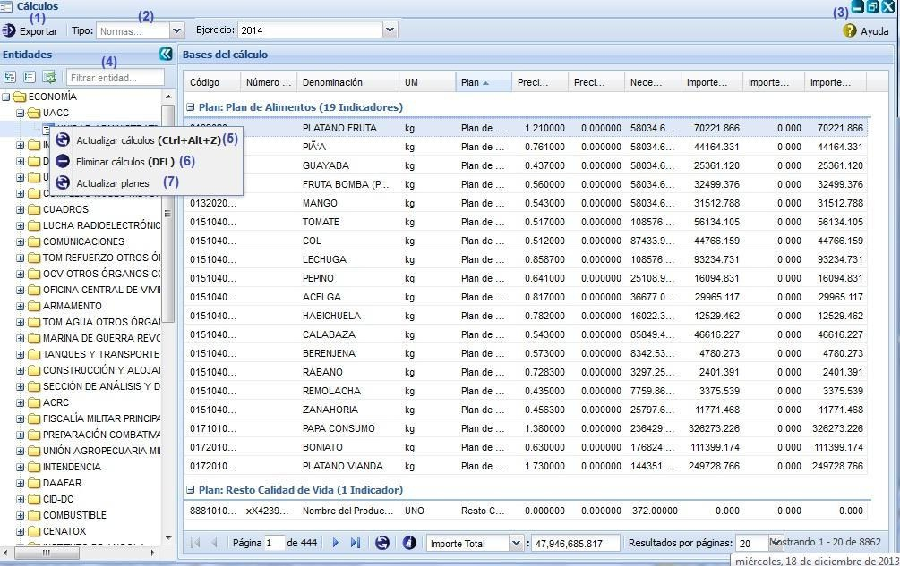
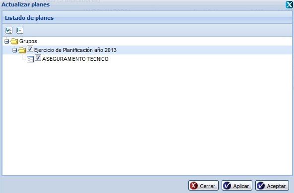
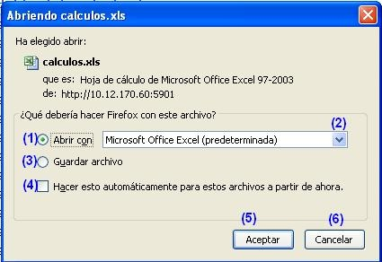

--Cálculos--
Esta funcionalidad presenta como objetivo mostrar, por indicadores y planes, el resultado del cálculo de los niveles de actividad por las normas de consumo y salidas asociadas a las actividades de una entidad dada, y mostrar de forma consolidada el resultado de los cálculos de todas las entidades que intervienen en la planificación de la entidad por la que se accedió al sistema. Para acceder a esta funcionalidad se selecciona Planificación material/Bases para el plan/Cálculos.
Una vez seleccionada la funcionalidad, aparecerá en pantalla la interfaz de la misma, donde el usuario autenticado podrá realizar las acciones que desee, en correspondencia con el acceso que tenga definido, ver figura 1. Una vez mostrada la interfaz debe desplegar el árbol de entidades haciendo clic en el signo más (+) del panel Entidades de la figura 1.

Figura 1. Interfaz Cálculos.
Las diferentes opciones que conforman la Figura anterior permiten:
- Exportar niveles, permite exportar las actividades, ver Exportar niveles.
- Según el tipo que se seleccione, lista las actividades que estén asociadas a normas o a indicadores de salida.
- Permite cambiar de Ejercicio. Inicialmente todas las operaciones realizadas en la interfaz, se efectuarán sobre el ejercicio actual, de querer actualizar los cálculos en un ejercicio diferente al actual, se procede a desglosar dicho campo y seleccionar uno de los ejercicios listados. Automáticamente el sistema recargará el panel Bases del cálculo con cada una de las actividades correspondientes al ejercicio seleccionado.
- Mostrar ayuda de la funcionalidad. Se puede realizar esta operación seleccionando la combinación de teclas (Alt + H).
- Introducir un criterio de búsqueda, para efectuar de forma rápida la búsqueda de una entidad en específica.
- Actualizar cálculos, permite que se actualicen las necesidades de los indicadores en correspondencia con los niveles de actividad que se le dieron a las actividades que contienen estos indicadores, lo que arroja como resultado final la actualización del importe total. Para que este proceso se ejecute se selecciona la opción Actualizar cálculo, el sistema muestra un mensaje de información, se presiona la opción Aceptar y se actualizan los cálculos, si presiona la opción Cancelar no se actualizan los cálculos. Se puede acceder a esta funcionalidad con las teclas (Ctrl + Alt + Z).
- Eliminar cálculo, permite eliminar todos los cálculos. El sistema mostrará un mensaje de confirmación, que se puede Aceptar o Cancelar según desee, si presiona el botón Aceptar el sistema mostrará un mensaje de información notificando que se realizó la acción satisfactoriamente, si presiona el botón Cancelar el sistema cancela la acción y no elimina los cálculos efectuados. Se puede acceder a esta funcionalidad presionando la tecla (Delete).
- Actualizar planes, permite actualizar los cálculos de los planes, una vez seleccionada esta opción se muestra una interfaz donde el usuario puede seleccionar el(los) plan(es) que quiere actualizar, se presiona la opción Aceptar, se cierra la ventana y se actualizan los planes, si presiona la opción Aplicar se actualizan los planes y la ventana permite seleccionar nuevos planes, si selecciona la opción Cerrar se cierra la ventana y no actualiza, ver figura 2.

Figura 2. Actualizar planes.
Exportar cálculo
Esta funcionalidad permite exportar las bases de cálculo de una determinada entidad, para exportar los mismos se procederá de igual forma como se explica en el listado de opciones de la siguiente figura.

Figura 3. Abriendo cálculos.xls.
Las diferentes opciones que conforman la figura anterior permiten:
- Abrir un documento con las bases del cálculo pertenecientes a la entidad seleccionada.
- Seleccionar formato en que desea guardar o visualizar el documento.
- Guardar archivo en la carpeta Descargas.
- Ejecutar las opciones (1) o (3) sin mostrar la ventana cada vez que se invoque a la funcionalidad.
- Ejecutar la acción según la opción seleccionada.
- Cancelar las acciones y salir de la interfaz sin realizar ninguna operación.
Nota: para ejecutar la funcionalidad se debe desglosar el árbol de entidades y seleccionar una entidad de las que se listan, luego de seleccionada la misma se recargará automáticamente el panel derecho bases del cálculo, activando así la opción Exportar.
Buscar actividades
Esta funcionalidad permite efectuar una búsqueda mediante filtrado en las columnas. Para efectuar la misma debe estar en el panel Bases del cálculo, ver figura 1. Una vez que accedió a esta se presiona clic en el botón “ ” que aparece en la parte derecha de cada columna. Luego de presionado el mismo, se procede a desplegar la columna y se ofrece la posibilidad de realizar búsqueda mediante filtrado. Se introduce o selecciona el criterio de filtrado según la información que brinde la columna seleccionada. Inmediatamente se presiona la tecla Enter y el sistema le mostrará en la interfaz las actividades según el criterio de filtrado seleccionado. En caso de que no existan datos a mostrar para el criterio de filtrado seleccionado el sistema lo notificará mostrando el mensaje de información: “No existen datos que se correspondan con el criterio de búsqueda especificados.”.
” que aparece en la parte derecha de cada columna. Luego de presionado el mismo, se procede a desplegar la columna y se ofrece la posibilidad de realizar búsqueda mediante filtrado. Se introduce o selecciona el criterio de filtrado según la información que brinde la columna seleccionada. Inmediatamente se presiona la tecla Enter y el sistema le mostrará en la interfaz las actividades según el criterio de filtrado seleccionado. En caso de que no existan datos a mostrar para el criterio de filtrado seleccionado el sistema lo notificará mostrando el mensaje de información: “No existen datos que se correspondan con el criterio de búsqueda especificados.”.